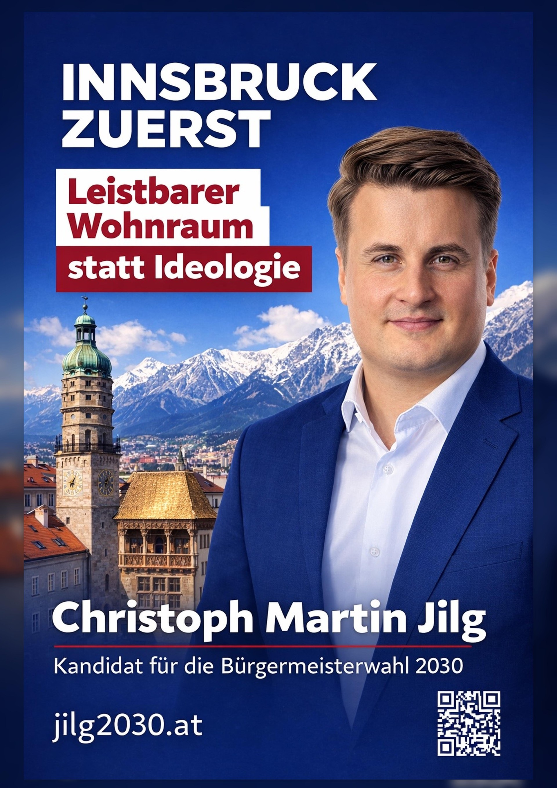

INNSBRUCK ZUERST
Leistbarer Wohnraum
statt Ideologie
Christoph Martin Jilg
Kandidat für die Bürgermeisterwahl 2030
Zum Programm
Foto: Kampagne Jilg 2030
Wöchentlich informiert
Kommentare zu aktuellen Themen in Österreich und Innsbruck – Schwerpunkt Wohnungsmarkt.